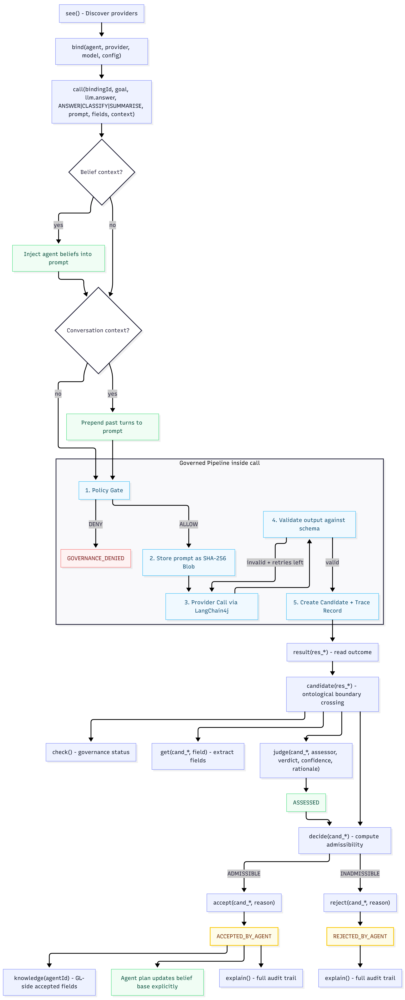

Framework
The framework boundary between agent programs and external generative resources.
Core concepts
Agent Layer
The host agent platform and its execution semantics.
- Autonomous Control: Deliberates over active goals and plans, acting as the final arbiter that evaluates generated suggestions before any host-side materialisation.
- Asynchronous Triggers: Inquires external support asynchronously, maintaining internal stability while waiting for generative responses.
- Context-Guarded Decision: Employs native agent guard conditions to decide whether to adopt, verify, ignore, or reject the candidate material.
Adapter
The bridge between an agent framework and Generative Layers.
- Datatype Translation: Maps native agent datatypes, such as AgentSpeak terms, structures, and lists, to standard Java parameters and vice versa.
- Syntactic Integration: The translation layer bridging agent execution environments with the Generative Layers kernel.
- Governed Lifecycle Binding: Isolates provider bindings per agent while sharing underlying stores, enabling cross-agent candidate evaluation and lifecycle ID resolution.
Governance Boundary
Policy, limits, audit, and admissibility checks.
- Decoupled Safety Policies: Out-of-band enforcement of budgets, rate limits, and content policies, shielding the host agent’s reasoning state from raw LLM interactions.
- Assessment & Admissibility Gating: Gates candidate acceptance through an evidence-based pipeline, where peer judgments (
judge()) feed into an admissibility checker (decide()). - Audit Logging & Tracing: Automatically generates globally unique trace IDs to log request contexts, checked policies, and outbound results.
- Pre-Adoption Verification: Intercepts responses, validating schemas and active rules before exposing candidate material to the agent.
Provider
The abstract connector to an LLM, tool, API, service, or module.
- Resource Abstraction: Standardizes heterogeneous LLM and tool interfaces into a uniform, swappable execution target.
- Resilience & Networking: Encapsulates HTTP requests and provider-specific retry handling behind the provider abstraction.
- Unified Interface: Simplifies provider switching, such as swapping model endpoints or mock providers, with zero changes to agent logic.
Candidate Material
External output that may be adopted, verified, ignored, or rejected.
- Isolated Sandbox: Quarantines raw LLM outputs as candidate material (
cand_), tracking them through lifecycle statuses such as VALIDATED, INVALID, ASSESSED, ACCEPTED_BY_AGENT, and REJECTED_BY_AGENT. - Structured Inspections: Provides safe query boundaries through
check()andget()so agents can inspect data before adoption. - Deliberated Incorporation: Candidate fields become GL-side knowledge only when the agent explicitly adopts the candidate through
accept(candidateId, reason); host belief insertion remains a separate explicit agent-program step.
Governance Modularity
Modular design vectors and parameter overrides for developers and researchers.
- Model & Provider Swapping: Easily swap model sizes (e.g. 8B vs 70B) or API providers to benchmark latency, accuracy, and cost.
- Structural Schemas: Tailor the exact CSV schema fields required for syntactic validation.
- Context Grounding: Inject pre-state agent beliefs directly into LLM prompt environments.
- Categorical & Numeric Gating: Define qualitative tiers (high, medium, low) or numeric limits (score ≥ 0.85) to control acceptance.
- Consensus Dynamics: Modify quorum rules (majority vs. unanimity) in multi-agent environments.
Request path
see() discovers available providers. bind() establishes a secure transaction context between agent and provider.
call() starts an out-of-band transaction: policy checks → query dispatch → syntax validation → sandboxed candidate creation.
candidate() resolves the candidate ID. check() and get() allow read-only inspection of candidate status and fields.
judge() records evaluative evidence. decide() previews admissibility from candidate status and assessments.
accept() records final adoption; reject() records final non-adoption. Host belief insertion remains separate and explicit.
knowledge() retrieves accepted GL-side candidate fields; explain() audits lifecycle records and traces.
Candidate states and constraints
GL treats generated output as candidate material with an explicit lifecycle. Admissibility is a read-only permission to accept; acceptance or rejection is a separate final decision recorded by the agent.
| State | How it is reached | Allowed next operations | Constraint |
|---|---|---|---|
PROPOSED | Reserved initial lifecycle state. | Implementation-dependent transition into validation. | Not normally exposed by the public call() path. |
VALIDATED | call() produced output that passed schema validation. | judge(), decide(), accept(), or reject(). | Can be accepted only when decide() returns ADMISSIBLE. |
INVALID | call() produced output that failed validation. | check(), explain(), or reject(). | Cannot be judged or accepted; it must be rejected or ignored. |
ASSESSED | judge() recorded evaluative evidence over a candidate. | judge(), decide(), accept(), or reject(). | A REJECT_VERDICT with confidence ≥ 0.5 makes the candidate inadmissible. |
ACCEPTED_BY_AGENT | accept(candidateId, reason) succeeded. | check(), get(), knowledge(), or explain(). | Final state. No later judge(), second accept(), or reject(). |
REJECTED_BY_AGENT | reject(candidateId, reason) succeeded. | check() or explain(). | Final state. No later judge(), accept(), or second reject(). |
ESCALATED | Reserved for escalation-oriented governance paths. | Audit and policy-specific handling. | Used to represent material that should not proceed through ordinary acceptance. |
Adapter return-value discipline
The lifecycle semantics are shared; native platform execution style differs.
- ASTRA:
accept()andreject()are boolean actions; if the framework returnsERROR:..., the action fails and the following plan statements do not continue. - Jason / JaCaMo: decision operations return a string into an output argument. Agent programs should guard with
decide(...)or check the returned decision id before adding local beliefs such as+accepted(Cid). - Belief adoption: GL records lifecycle decisions; selected fields enter the host belief base only through explicit host-language updates such as
+classified(...).
Canonical commands
The framework establishes a canonical contract of 13 lifecycle commands exposed across target platforms. Platform adapters preserve the same lifecycle semantics, while syntax and return-value style may differ.
Lifecycle diagram
Interactive view of the complete GL v2 governed lifecycle — all 13 commands, 7 candidate statuses, the 5-stage invocation pipeline, retry/recovery, belief-RAG, conversation context, admissibility rules, finality guards, and the host-agent belief boundary. Scroll to zoom, drag to pan.
